What makes an element critical
Industry and governments say critical minerals. The lecturer says this is the wrong term, because quartz is a mineral but it is not critical. The correct idea is critical elements: elements that are in great demand now or soon, and that face major supply problems in the future. You will see "critical minerals" everywhere, so you need to know both terms. slide 2 lecture recording, 2 Nov
The idea is political. It only became common in about the last five years. Every country has its own list, and its geology controls the list. In the USA, each government department has a different list (the Department of Energy list is very different from the Department of War list). China controls most of the world market for many of these elements, so other countries now search for their own supply. Australia has one of the shortest lists, because it has deposits of almost everything. For example, zinc, silver and tin are critical in the USA but not in Australia. slides 2 to 5 lecture recording, 2 Nov
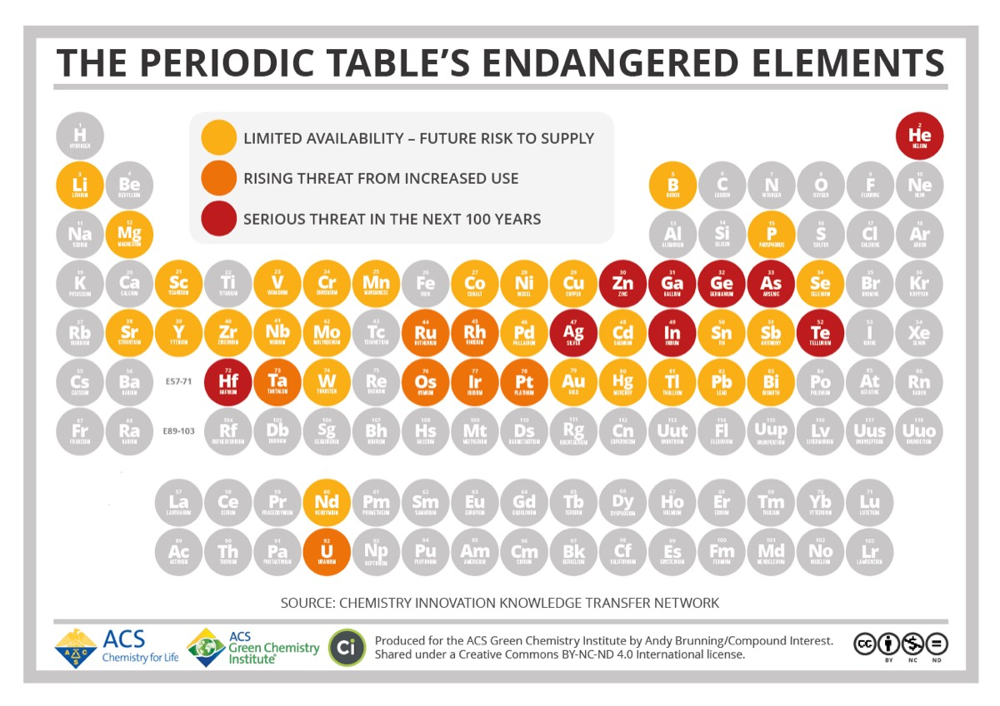
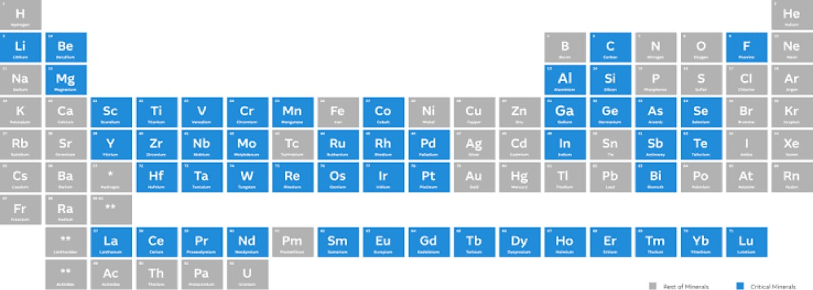
Why do they matter? Batteries in phones and laptops, electric vehicles, green energy, carbon capture, hydrogen fuel cells (Pt), microchips (Ga), optical fibre (Ge), LCD screens (In, Sn) and strong magnets (REE). About 70% of all rare earth use is in magnets. One F-35 fighter jet contains 400 kg of rare earths, and one wind turbine contains about 20 kg. slides 4 and 6 lecture recording, 2 Nov
Demand for lithium, cobalt and graphite is expected to rise by 500%. Copper demand is rising fast too, because an electric car contains 5 to 10 times more copper than a normal car. The slide says that by 2030, demand for copper will be more than all the copper ever mined. Most countries are now searching hard for critical element deposits, but mostly for conventional deposit types. The lecturer argues that we must also look at unconventional deposits, such as coal and coal-bearing rocks. slides 7 and 8 lecture recording, 2 Nov
Copper in one vehicletap each vehicle
Copper per vehicle from slide 7: conventional 10 to 20 kg, hybrid 40 to 60 kg, fully electric 90 to 100 kg. Bars show the range.
Lithium and its three deposit types
Lithium is element 3. Its main use now is in batteries for hybrid and electric vehicles. It is also used in ceramics, glass, greases, bauxite smelting, dehumidifiers and medicines. The world will need about 20 Mt of lithium over the next 80 years. Greenbushes in Western Australia, the largest mined deposit, has only about 0.85 Mt. The price rose sharply after 2015, and it has gone up and down since then. slide 9 lecture recording, 2 Nov
Lithium is very light (atomic mass 6.94), so an electron microprobe cannot analyse it. The average crust has only 16 ppm, and less than 10% is recycled. It is the least dense metal (0.534 g/cm³), and it reacts strongly with water. Economic lithium is found in only three deposit types: slide 10
| Type | Share of resources | Share of production |
|---|---|---|
| Granitic lithium pegmatites | 40% | 60% |
| Lithium brines | 60% | 40% |
| Lithium-rich clays | Potentially large; first mines in Nevada | |
slide 10, lecture recording, 2 Nov
The list of big deposits has changed fast. In 2012, the largest resources were all pegmatites: Greenbushes (0.85 Mt Li), Jiajika in China, Bessemer City in the USA and Manono-Kitolo in the DRC. By 2020, four of the five largest pegmatite resources were in Australia: Greenbushes (0.94 Mt), Wodgina (0.83), Earl Grey (0.66) and Pilgangoora (0.63). By 2025, brines from China, Chile and Argentina were among the top producers. Brines were almost unknown in 2012. slides 11 to 13 lecture recording, 2 Nov
Who produces lithium (2025)
Production and reserves in tonnes, from slide 13. Gold bars are pegmatites, blue bars are brines.
Lithium pegmatites and Greenbushes
made from granite are common, but lithium-rich pegmatites are rare. In them, lithium comes with other rare metals: beryllium, tantalum-niobium and tin. A typical grade is 0.6% Li₂O, which is about 0.28% lithium. Most are strongly zoned in rings: a feldspar-rich outer zone, an intermediate zone rich in rare metals (where the lithium is), and a quartz-rich core. Crystals can be several metres long, because the melt was rich in volatiles. slide 14 lecture recording, 2 Nov
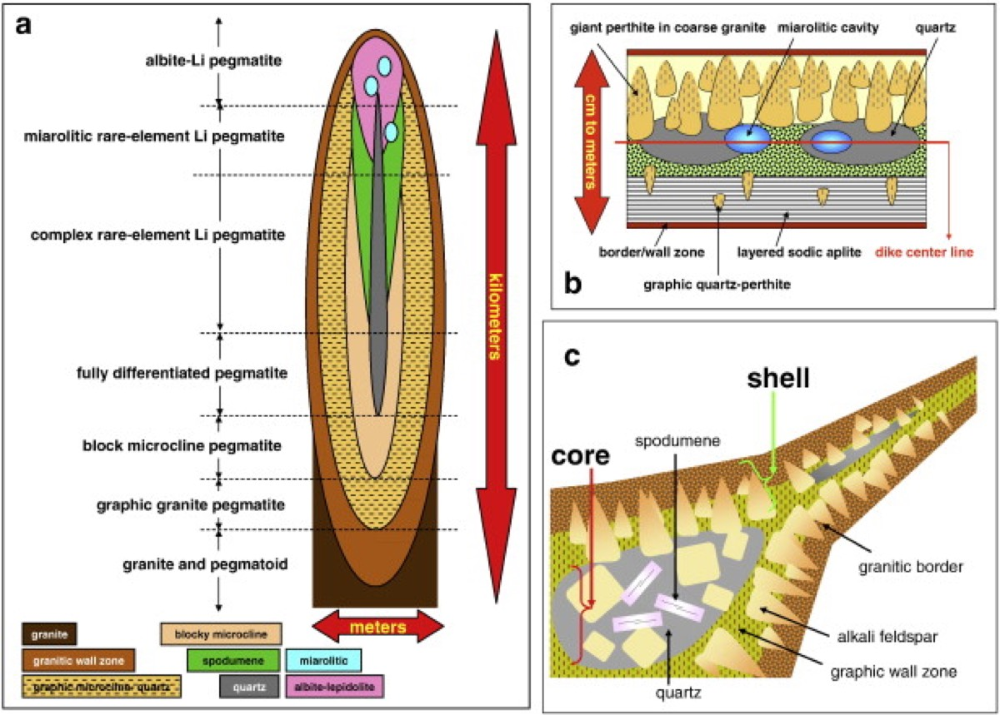
Walk into the pegmatite0 / 5
The main ore mineral is (LiAlSi₂O₆), a lithium pyroxene with 6 to 9 wt% Li₂O. It has the same physical properties as other pyroxenes and is colourless to white. Petalite (LiAlSi₄O₁₀) and eucryptite (LiAlSiO₄) are other lithium silicates. The lithium micas (pink to purple) and zinnwaldite are common, but nobody extracts lithium from them yet, because it costs too much. Germany is working on a cheaper method, because Germany and the Czech Republic have a lot of these micas. A chlorite-group mineral, , also carries lithium, and it can be extracted economically. slides 16 and 17 lecture recording, 2 Nov
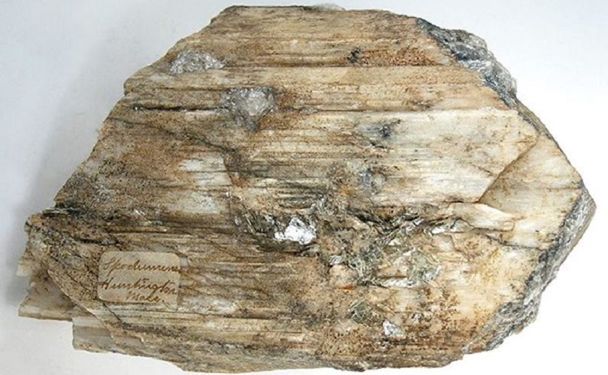
Describe the colour, the lustre and the long lines on this crystal. Which mineral group does it belong to?
Show what I see
- A large, pale cream to white crystal, longer than it is wide.
- Many straight parallel lines and cleavage traces along its length, with a glassy to slightly pearly lustre.
This is spodumene, the lithium pyroxene. Like other pyroxenes it has a prismatic shape and two cleavages, but it is pale instead of dark green or black. Crystals like this can be metres long in a pegmatite. The lecturer passed a spodumene specimen from a Wisconsin pegmatite around the class. slide 16 lecture recording, 2 Nov
Greenbushes, south of Perth and close to Margaret River, is the largest lithium pegmatite and the largest working lithium mine on Earth. Mining began in 1888 for tin, in the pegmatite and in alluvial deposits eroded from it, and later for tantalum. Lithium production only began in 1985, when there was demand for it. The miners then went back over the old waste dumps for the spodumene. The pegmatite is 2.57 billion years old. It dips steeply (45° to the west) inside amphibolite and schist, and later dolerite dykes cut it. It is about 3 km long and 300 m wide. It is a group of dykes and pods that formed during deformation, mostly parallel to the foliation of the host rocks. The dolerite dykes dilute the ore, so the miners must allow for them. slides 18 and 19 lecture recording, 2 Nov
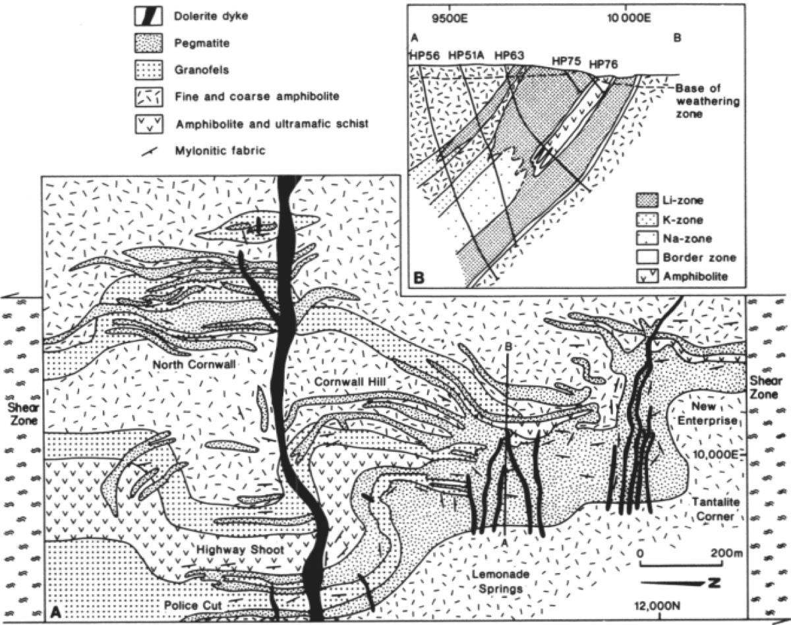
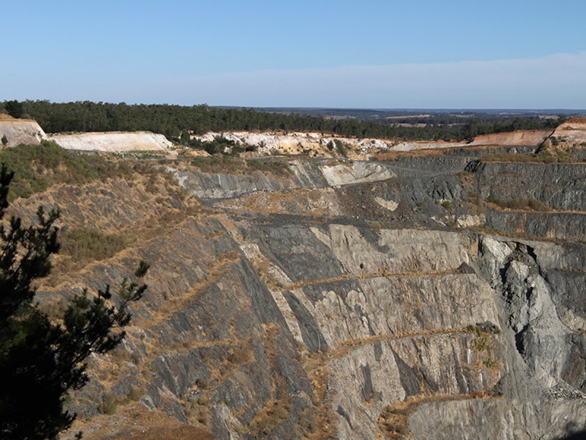
The ore is in one of the two rock types you can see. Which one, and why is it easy to follow during mining?
Show what I see
- Pale, almost white bands and lenses in dark grey to black rock.
- Some of the pale bands are folded.
The pale rock is the lithium pegmatite, and the dark rock is the host amphibolite and schist. The strong colour contrast makes the ore easy to follow: the miners simply follow the white rock. slide 20 lecture recording, 2 Nov
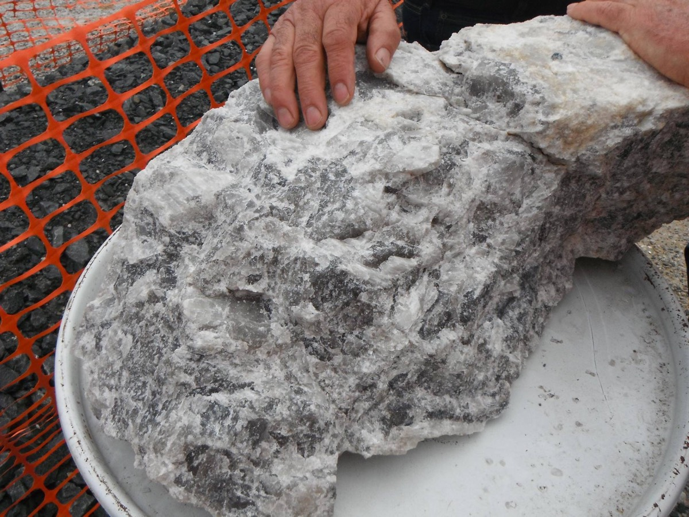
Describe the grain size and the colours. What is the lithium mineral in this ore?
Show what I see
- A very coarse-grained, pale rock with white and grey crystals several centimetres long.
- No dark minerals.
This is typical Greenbushes ore: coarse pegmatite with pale spodumene, the lithium pyroxene, which is what the mine is after. slide 21 lecture recording, 2 Nov
- Spodumene: pale, glassy, prismatic, with pyroxene cleavage; it can be in huge crystals.
- Lepidolite: pink to lilac mica in flakes; it marks lithium pegmatites, but its lithium is not extracted yet.
- Lithium cannot be seen or analysed with a microprobe, so you name the lithium minerals by their physical properties.
How LCT pegmatites form
Pegmatites occur in every craton and orogenic belt, at all times in Earth history. There are two main types. pegmatites are rich in lithium, caesium and tantalum. pegmatites are rich in niobium, yttrium and fluorine. LCT pegmatites are also rich in boron, which suggests the source was once seawater. So they form when a sedimentary protolith melts, and they come from . These granites are emplaced at 8 to 12 km depth. Many LCT pegmatites are outside the granite, several kilometres or more away from it, higher in the crust at about 9 to 6 km. They crystallise at low temperature, about 500 to 400 °C. You usually find many pegmatite lenses and pods in one area: if you find one, you will find more. Some follow the foliation and some do not, so they are hard to explore for. slides 22 and 23 lecture recording, 2 Nov
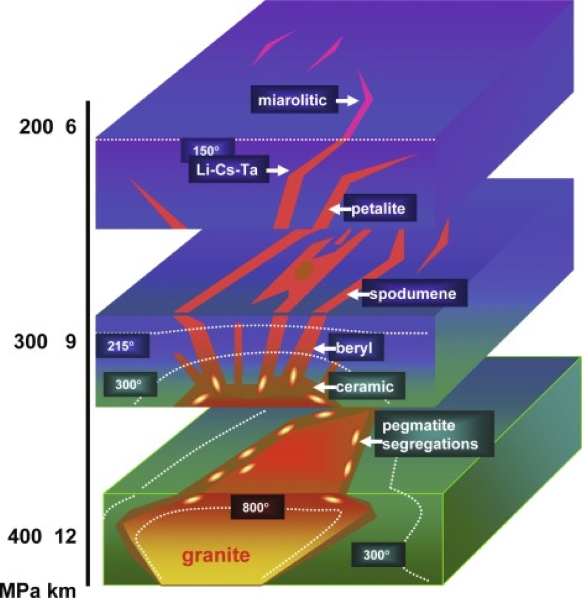
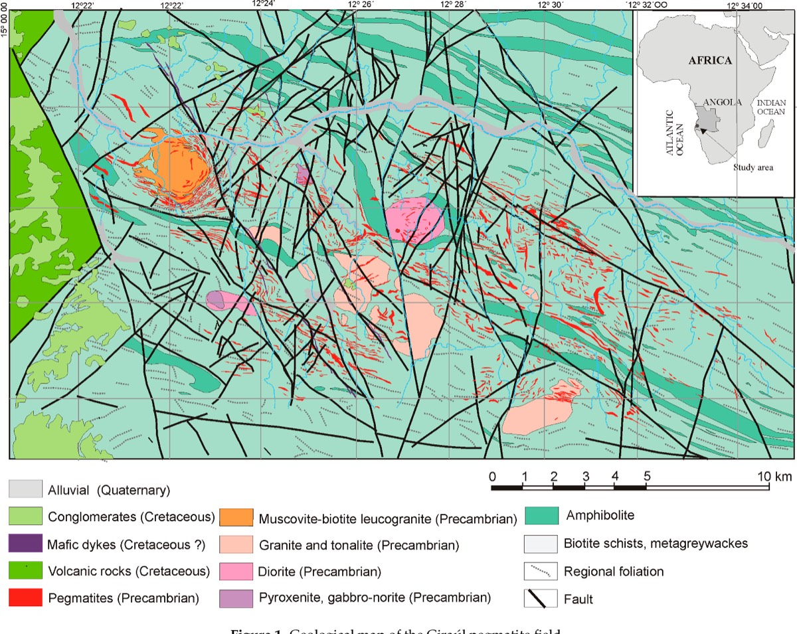
To make an LCT pegmatite, you need a very viscous melt with up to 15% dissolved water and a lot of metal. It comes from 90% fractional crystallisation of the parent S-type granite, in a mostly closed system. Each step leaves a smaller volume of melt that is more enriched. The volumes are huge: for the 2 km³ Tanco pegmatite in Canada, about 18 000 km³ of protolith had to melt. slide 25 lecture recording, 2 Nov
Pegmatites do not cool slowly. They can cool in days to weeks, to 200 to 250 °C below their liquidus, so they start to crystallise at about 450 to 500 °C. The crystals are giant because the melt is rich in volatiles, which makes space and helps fast crystal growth. It has nothing to do with slow cooling. Try the animation at the top of the page. slide 25 lecture recording, 2 Nov
- LCT = lithium, caesium, tantalum (+ boron), from S-type granites; NYF = niobium, yttrium, fluorine.
- 90% fractional crystallisation; up to 15% H₂O; Tanco 2 km³ from 18 000 km³ of melted protolith.
- Pegmatites cool fast (days to weeks); giant crystals come from volatiles, not slow cooling.
Lithium brines
Lithium brines form only in dry, high basins: the Andes and Tibet. The lithium is dissolved, as a lithium chloride complex, in hypersaline water that is 1.7 to 24 times saltier than seawater. The dissolved salts are close to saturation. The brines also contain a lot of potassium, boron, chlorine and sulphate. So in a brine deposit you are really mining water. The big ones are Atacama in Chile (6.3 Mt Li at 0.18%), Uyuni in Bolivia (3.6 Mt) and Zhabuye in Tibet (1.5 Mt). Brine grades are lower than pegmatite grades. China has found many more brines in Tibet, and this changed the market. slides 26, 27 and 29 lecture recording, 2 Nov
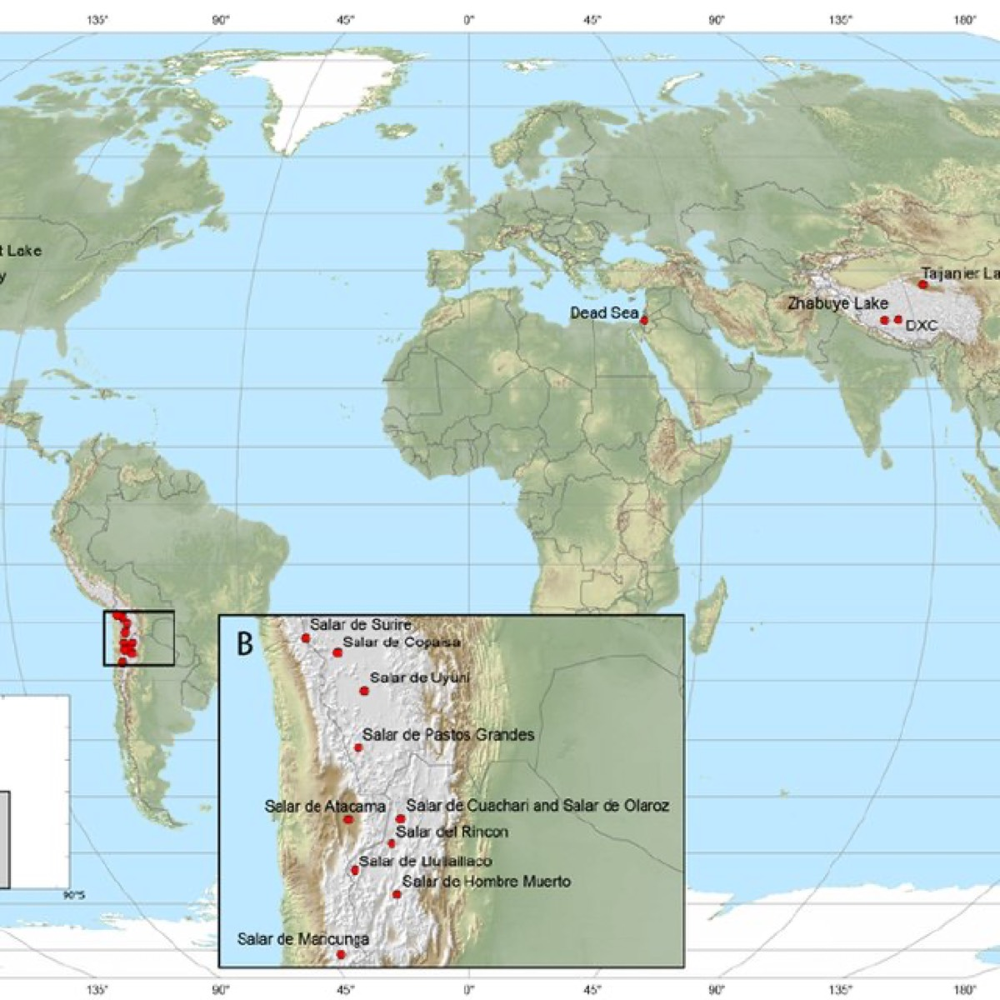
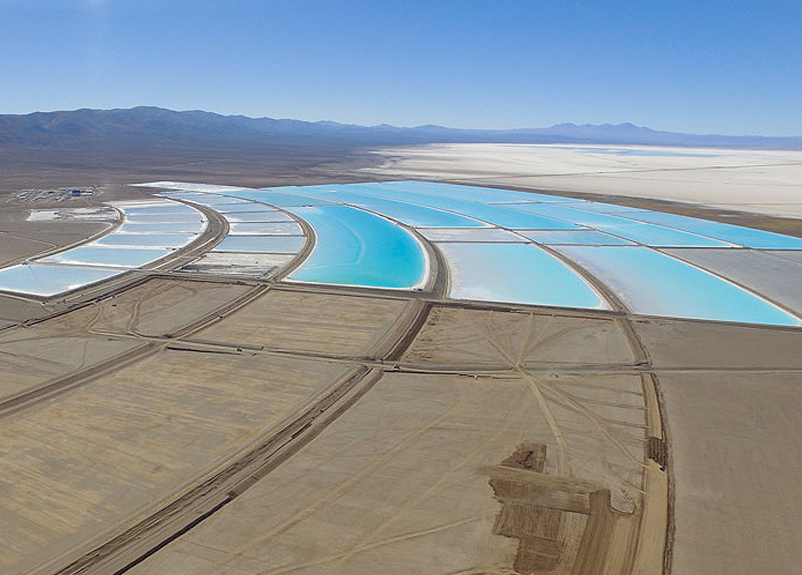
This is a lithium mine. Where is the ore, and what do the ponds do?
Show what I see
- Large flat ponds in different shades of blue and white, on a dry salt flat, with no pit or waste dump.
The ore is the brine pumped up from under the salt flat. The water evaporates in the ponds over time. Different salts come out at different stages of evaporation, so the lithium can be separated from the calcium and magnesium salts. The lecturer said it looks more like a fish farm than a mine. slide 28 lecture recording, 2 Nov
There are three types. Immature salars are mostly clay, silt and sand, with only a little halite, ulexite and gypsum. They formed in wetter periods. Their sand beds have 20 to 25% porosity through about 300 m of sediment, so they hold a lot of brine. Mature salars are mostly porous halite, in lower and drier areas. Only the top 15 to 25 m of halite is porous. Deeper, halite cement makes massive beds 60 to 70 m thick, so brine is pumped from the edges and base of the salar. Lithium-rich groundwaters are the third type (Cornish tin mines 220 mg/L, deep oilfield water up to 700 mg/L, Iceland geothermal water 130 mg/L, Salton Sea brine 286 mg/L). slides 26, 30, 31 and 34
Nobody is sure where the lithium comes from: weathered volcanic ash, hot springs, older rocks, wind-blown dust or other basins are all possible. To explore, you need groundwater chemistry and flow models. You sample the water and measure it. Pumping out brine lowers the water table in a region that is already dry, so it causes environmental problems. slides 32 and 33 lecture recording, 2 Nov
Lithium clays
Lithium clay deposits are linked to nearby rhyolitic volcanic rocks, mostly tuffs that altered to clay. There are three types: lithium in hectorite and other mixed-layer clays; lithium adsorbed onto the surface of clay minerals (ion clay deposits); and lithium in jadarite (LiNaSiB₃O₇(OH)). Jadarite is known from only one deposit, the Jadar Basin in Serbia. The lithium layers are 1 to 90 m thick, but they extend along strike for 20 km or more, because they are ash beds. Nobody is sure whether the lithium came from primary minerals rich in lithium, or from later supergene or hydrothermal alteration. slides 35 and 37 lecture recording, 2 Nov
The biggest are Sonora in Mexico (0.85 Mt Li), Thacker Pass in Nevada (0.58 Mt) and Jadar (0.44 Mt at 0.84% Li). The slide says none is mined, but the lecturer said that Thacker Pass is now being mined. The USA has very few brines and pegmatites, so it wants its own supply. Ten years ago this deposit would not have been economic. Jadar could supply 10% of world demand and all of Europe's, but an Australian company was stopped from mining it after environmental protests. slides 36 and 37 lecture recording, 2 Nov
Which lithium deposit?0 / 6
Cobalt
Cobalt (element 27) is a silvery blue, magnetic metal with a high melting point (1495 °C). The crust has only 26.6 ppm. It goes into rechargeable batteries (lithium-ion and Ni-Cd), turbines that must stay strong at high temperature, strong magnets and ceramics. In 2011 the Democratic Republic of Congo (DRC) produced 55% of the world's cobalt. In 2025 the DRC produced 230 000 t from sedimentary copper deposits, and Indonesia was second with 44 000 t, as a by-product of its nickel laterites. Chinese companies do most of the mining in both countries, and most of the cobalt goes to China. Canada is the only producer on the list whose cobalt comes from sulphide ore. slides 40 to 42 lecture recording, 2 Nov
The main primary cobalt mineral is (CoAsS), the cobalt version of arsenopyrite (FeAsS): cobalt and arsenic behave in a similar way. In oxide zones, cobalt forms , Co₃(AsO₄)₂·8H₂O, or "cobalt bloom": soft, velvety, purple-pink needles. slide 43 lecture recording, 2 Nov
Three deposit types supply the cobalt. About 60% comes from stratiform sediment-hosted Cu-Co deposits of the Central African Copperbelt (DRC and Zambia). There, chalcopyrite, bornite, pyrite, chalcocite and carrollite form stratiform lenses in clastic and carbonate rocks. Salty, metal-rich fluids came in at low to moderate temperature, during diagenesis and early metamorphism. These are the same family as the Kupferschiefer deposits in Lecture 16. About 23% comes from magmatic Ni-Cu-(Co-PGE) deposits such as Sudbury, Voisey's Bay and Norilsk (Lecture 8). About 15% comes from Ni-Co laterites such as Murrin Murrin in WA, Cuba, New Caledonia and Brazil. slides 44 and 45
Where does this cobalt come from?0 / 4
Niobium, tantalum and zirconium
Each of these metals comes mainly from one deposit type. Niobium comes from carbonatites, mostly in Brazil (104 000 t in 2025, with 14 Mt of reserves), then Canada. Tantalum comes from pegmatites, mostly in the DRC, Rwanda and Nigeria. Zirconium comes from zircon in mineral sands, and Australia is the world's largest producer (400 t in 2025, with 55 000 t of reserves). There is no USA or European production in the top lists, which is why these elements are critical for them. slides 48 to 50 lecture recording, 2 Nov
| Element | Main deposit type | Top producer (2025) |
|---|---|---|
| Niobium | Carbonatite | Brazil |
| Tantalum | Pegmatite | DRC |
| Zirconium | Mineral sands (zircon) | Australia |
| Lithium | Pegmatite, brine | Australia |
| Cobalt | Sediment-hosted Cu-Co | DRC |
slides 13, 42, 48 to 50
Critical elements in coal
The lecturer calls this "extracting the green from the black". Metalliferous coals contain critical elements at concentrations that could be economic: usually about 10 times more than average world coal. Coal ash, left after the coal is burnt, is richer again, because burning removes the organic matter and volatiles, and the elements stay behind in a smaller mass. Ash can match or beat the grade of conventional ore. Goldschmidt, the "father of geochemistry", noticed this in 1933, but nobody followed it up. Examples: uranium up to 0.4 wt%, Zr and Nb up to 0.2 wt%, and REY up to 1.5 wt%. slides 51 to 53 lecture recording, 2 Nov
The grade may be lower than in a conventional deposit, but the size is far larger. These are layers in sedimentary basins. They are conformable with the rocks around them, keep the same thickness and grade, and can extend for hundreds of kilometres. So they hold very large total amounts of critical elements. slide 54 lecture recording, 2 Nov
Burn the coal, concentrate the metal
The coal and ash values are real (Jungar Ga, slide 58; Jincheng Li, slide 60). The model assumes all the element stays in the ash, so ash = coal ÷ ash fraction. That is a simplification: real coal loses some elements when it burns.
Real examples, all from China and the Russian Far East:
- Germanium. Coal at Wulantuga and Lincang (China) and Spetzugli (Russia) supplies more than 50% of the world's germanium. Germanium is used in infrared lenses, fibre optics, semiconductors and solar cells. The lecturer said every American fighter jet and guided missile uses infrared, but the USA produces no germanium. Germanium production figures are not published because it is so strategic. slides 56 and 57 lecture recording, 2 Nov
- Gallium. Jungar coalfield coal has up to 76 ppm Ga and its ash up to 178 ppm, and it produces 150 t of gallium a year. Gallium goes into solar cells, LEDs, lasers and electronics. China produces almost all of it, mostly as a by-product of aluminium processing. slides 58 and 59
- Lithium. Anthracite in the Jincheng coalfield (Qingshui Basin on the slide) has up to 1316 ppm Li in the coal and 2200 ppm in the ash, probably in cookeite veinlets in fractures. slide 60
- REY, Nb, Ta, Zr, Hf and Ga in alkaline volcanic ash beds next to the coal. The K1 coal ash at Huayingshan (Sichuan) has 1710 ppm REY, 3617 ppm Zr-Hf and 406 ppm Nb-Ta. slide 61
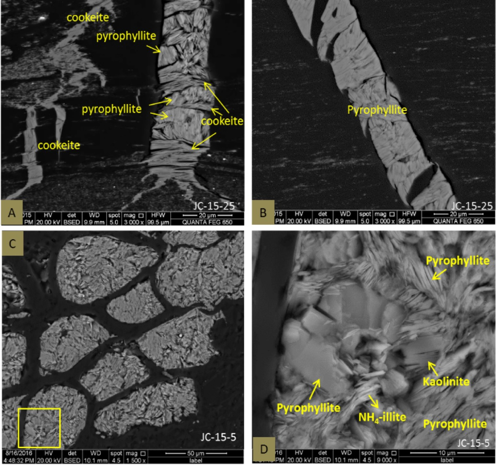
The minerals show where the elements came from. Primary minerals came from volcanoes: sanidine, volcanic quartz, zircon, monazite, Ti-Nb-Ta oxides, apatite, rutile and xenotime. Secondary minerals grew later from hydrothermal fluids: REE carbonates and phosphates, anatase, brannerite and new tiny zircons. Organic acids in the peat swamp even moved elements that are normally immobile, such as titanium and zirconium. The lecturer's advice: a power station that burns coal should process its ash, because it is full of critical elements. slides 62 to 65 lecture recording, 2 Nov
Hidden ore in volcanic ash beds
The lowest Xuanwei Formation of eastern Yunnan, south-west China, hosts critical element ore with no visible alteration at all. It is linked to the . It was found by accident. Coal geologists log their drill holes with natural gamma rays, because coal gives a strong gamma spike. These holes had strong gamma anomalies where there was no coal. slides 66 to 69 lecture recording, 2 Nov
Log the hole: find the anomalies with no coal0 / 3 found
Each spike is a high gamma reading. Tap a spike to see the rock at that depth.
Invented log for teaching. The idea, gamma anomalies with no coal that turned out to be ore beds, is from slide 69 and the recording.
The anomalous beds have high Al₂O₃/TiO₂, very high anatase and clay, and low iron compared with the rocks around them. On average they contain Nb 458 ppm, Ta 31, Zr 2814, Hf 77, Th 79, U 19, and REY 1402 ppm (up to 5091 ppm, about half a weight percent). The concentrations and ratios stay almost the same over hundreds of kilometres. slides 69, 70 and 73 lecture recording, 2 Nov
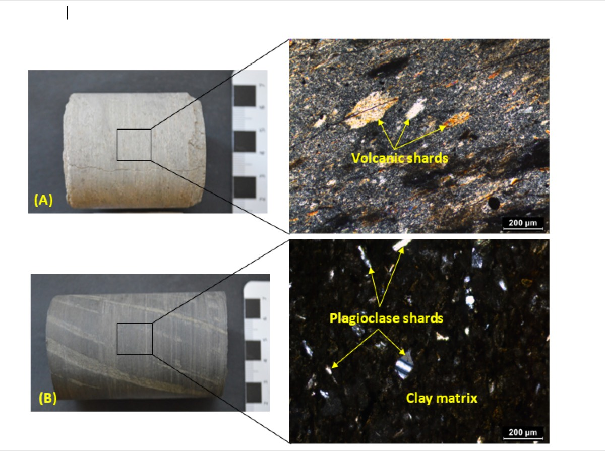
Look at the core first. Would you log it as ore? Then look at the microscope views. What do the angular grains tell you?
Show what I see
- The core looks like ordinary pale grey claystone or siltstone, with fine layers and no veins, sulphides or alteration.
- Under the microscope: sharp, angular, broken grains (volcanic shards and plagioclase shards) in a clay matrix.
In hand specimen you would never log this as ore. The shattered, angular crystal fragments show that it is a tuff: ash blown out of a volcano and laid down in the basin. These ash beds are the ore. The lecturer recognised them as volcanic from the thin sections. slide 71 lecture recording, 2 Nov
The zircons tell the same story: shattered grains with fractures from sudden decompression, round grains that probably partly melted during the eruption, and tiny secondary zircons that grew later. Niobium is in altered ilmenite with anatase. The REE are in apatite, florencite and REE carbonates that form strongly zoned veins. slides 75 to 78 lecture recording, 2 Nov
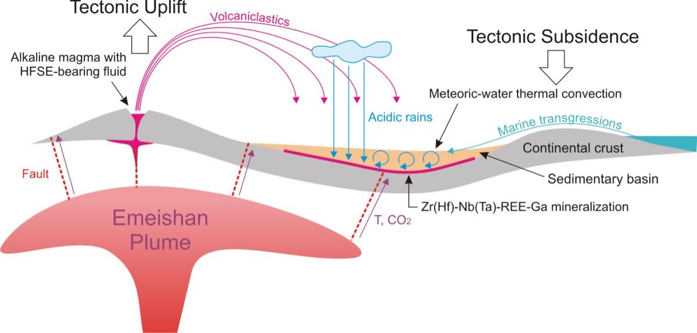
Put the story in order0 / 6
Can the elements be extracted? A study of a similar tuff from southern China leached out 93% of the gallium and 86% of the REE with simple leaching, but less than 1% of the niobium. Niobium is very hard to leach. The lecturer's conclusion: these deposits should exist elsewhere in the world, but they are almost impossible to see, because there is no visible alteration. slides 82 and 83 lecture recording, 2 Nov
Putting it together
Name the mineral0 / 4
- "Critical" is political: every country (and department) has its own list; Australia's is short.
- Lithium: pegmatites (40% of resources, 60% of production), brines (60%, 40%), clays. Greenbushes is the largest pegmatite and mine.
- Spodumene (Li pyroxene) is the ore; lepidolite and zinnwaldite are not processed yet; cookeite can be.
- Cobalt: 60% from African Copperbelt Cu-Co, 23% magmatic Ni-Cu, 15% laterites. Cobaltite primary, erythrite in oxide zones.
- Coal and ash beds: low grade, but huge, uniform and laterally extensive; no visible alteration.
Classify the deposit0 / 6
Self-test
Answer each question out loud or on paper before you open it. If your answer was right, claim the ounces.
Glossary and flashcards
These are terms that the lecture expects you to know, or only explains briefly. Tap a dotted word in the text to see its meaning.
Flashcards
Where this goes next
Lecture 19 covers the rare earth elements, the most famous critical elements, and their carbonatite and ionic clay deposits. Compare the LCT pegmatites here with the granite-related tin and tungsten of Lecture 15: both come from evolved S-type granites.